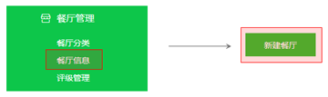
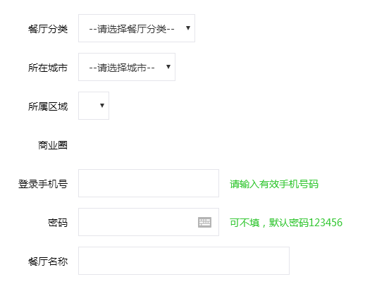
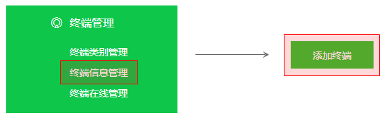
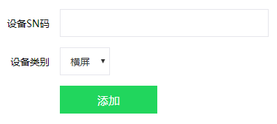
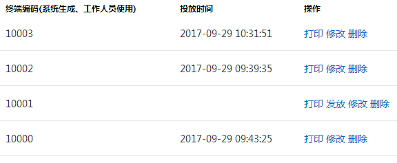

总体步骤
- 后端添加餐厅
- 后端添加终端
- 打印终端条码
- 餐厅施工
- 餐厅内局域网设置摄像头、NVR
- 设登录终端客户端备客户端（员工APP）扫码投放终端，并设置摄像头SN以及NVR的SN
- 登录终端客户端
在左侧导航选择“餐厅管理”，点击“餐厅管理”下的二级菜单“餐厅信息”进入到餐厅列表页面，然后点击右上角的“新建餐厅”按钮进入到添加餐厅页面：

填写餐厅基本信息，然后点击“提交”按钮

备注：“登录手机号”十分重要，是查询机客户端登录的唯一方式
（这里建议用长期稳定的手机号进行填写，餐厅老板的手机号来进行填写）
在左侧导航选择“终端管理”，点击“终端管理”下的二级菜单“终端信息管理”进入到终端列表页面，然后点击右上角的“添加终端”按钮进入到添加终端页面：

填写终端信息，然后点击“添加”按钮

在“终端信息管理”页面中，列表的右侧点击“打印”，进入到打印条码界面，并配合着条码打印机打印出亚银纸材质的条码标签。

施工完成要保证局域网的畅通，并且让多个摄像头、NVR以及终端查询机在同一网段内，并且保证外网畅通，以保证查询机可以扫描到本地餐厅内的摄像头。
施工后要保留改餐厅简单易懂的不限图，在图中标明个设备位置，布线方式以及餐厅内路由、宽带猫等设备的位置。
该步骤由调试工程师使用内部发布的移动APP：“食安共享设备管理”APP来进行，主要目的是标注了设备在系统中终端所对应的餐厅。